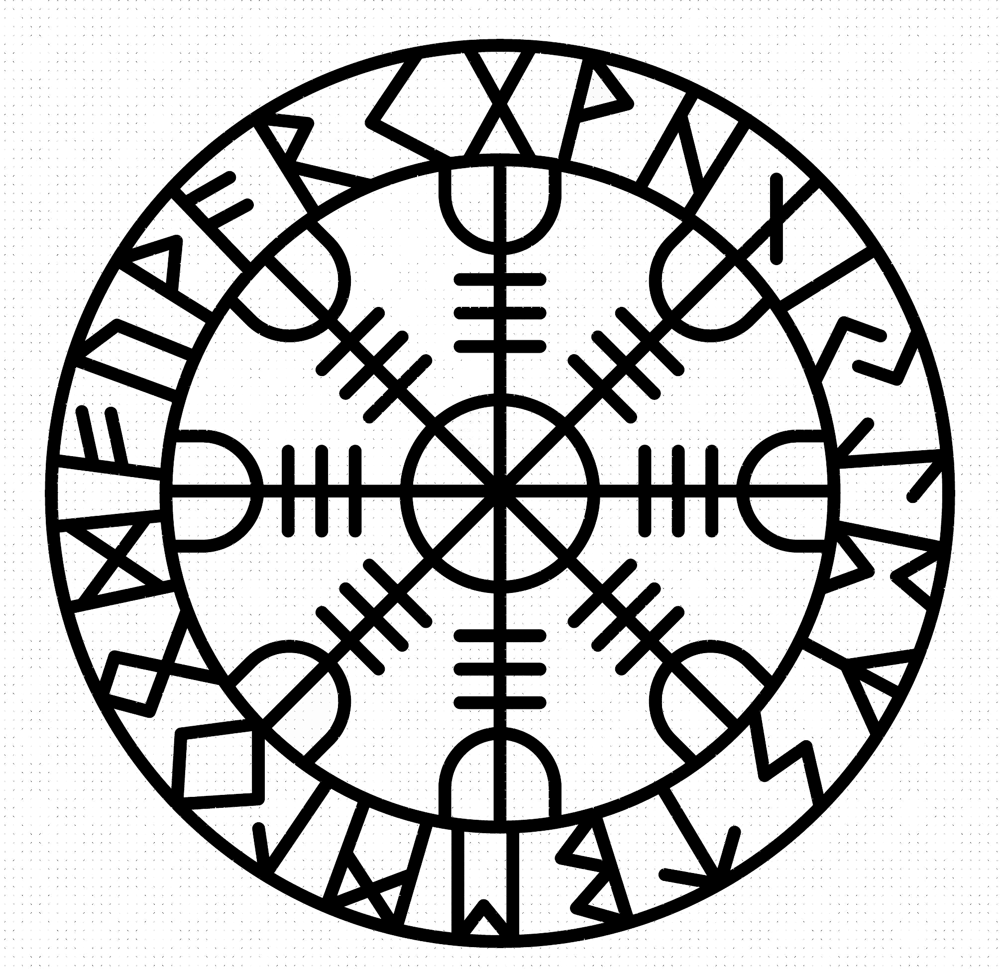
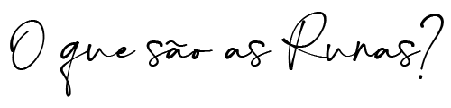

As runas formam um conjunto de 24 antigos símbolos alfabéticos utilizados como ferramentas de adivinhação, como um oráculo que ajuda a traçar os padrões do futuro. O alfabeto rúnico é feito de símbolos de forças poderosas do cosmos. A palavra “runa” significa oculto, mistério, segredo. Cada uma das runas mostra como as forças do mundo interagem e influenciam a todos.

